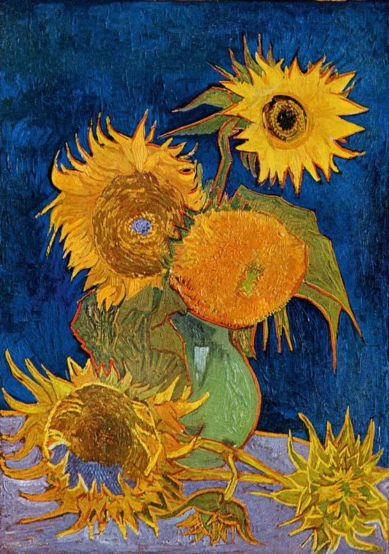

Thought Zen
Sand and Diamond from My Life
View On GitHub
about
research
blog
project
back

Vincent van Gogh.
Sun Flowers
, 1888.
Knowledge, Distillation.
Jan. 2 2017:
Generative Adversarial Networks - The Basics
Oct. 30 2016:
Reread Bengio03 - A neural probabilistic language model
Sep. 26 2016:
How to construct $\mathbb{R}$ from $\mathbb{Q}$?
Sep. 23 2016:
Why there are Kernels in probabilistic formulation of Reinforcement Learning?
Daily, darling!
Aug. 12 2016:
Rational Speech Act Theory for Modelling Discourse Connectives
Jul. 17 2016:
Attention over tree and attention over attention, structural composition
Connecting Dots
Dec.26-31.2016 -
Trivial Matters
Dec.20-25.2016 -
Trivial Matters
Dec.12-18.2016 -
Trivial Matters
Dec.5-12.2016 -
Trivial Matters
Nov.28-Dec.5.2016 -
Trivial Matters
Nov.21-27.2016 -
Trivial Matters
Nov.14-20.2016 -
Trivial Matters
Wanted Questions
How many ways to train a neural network?